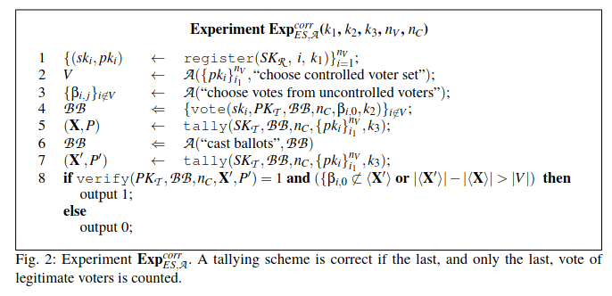
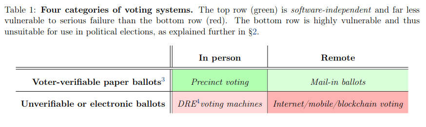
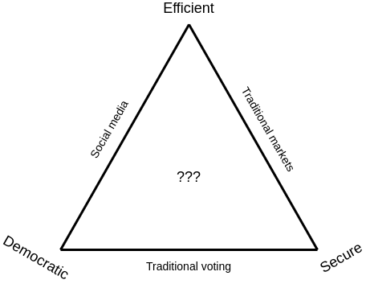
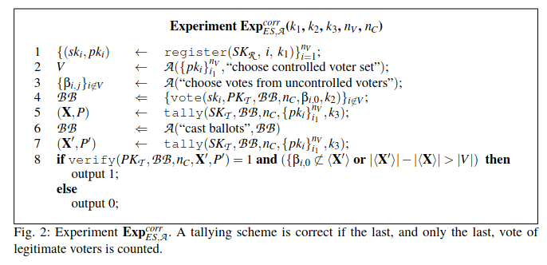
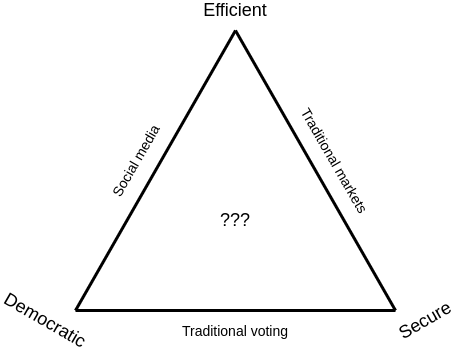

Blockchain voting is overrated among uninformed people but underrated among informed people
2021 May 25
See all posts
Blockchain voting is overrated among uninformed people but underrated among informed people
Special thanks to Karl Floersch, Albert Ni, Mr Silly and others for feedback and discussion
Voting is a procedure that has a very important need for process integrity. The result of the vote must be correct, and this must be guaranteed by a transparent process so that everyone can be convinced that the result is correct. It should not be possible to successfully interfere with anyone's attempt to vote or prevent their vote from being counted.
Blockchains are a technology which is all about providing guarantees about process integrity. If a process is run on a blockchain, the process is guaranteed to run according to some pre-agreed code and provide the correct output. No one can prevent the execution, no one can tamper with the execution, and no one can censor and block any users' inputs from being processed.
So at first glance, it seems that blockchains provide exactly what voting needs. And I'm far from the only person to have had that thought; plenty of major prospective users are interested. But as it turns out, some people have a very different opinion....

Despite the seeming perfect match between the needs of voting and the technological benefits that blockchains provide, we regularly see scary articles arguing against the combination of the two. And it's not just a single article: here's an anti-blockchain-voting piece from Scientific American, here's another from CNet, and here's another from ArsTechnica. And it's not just random tech journalists: Bruce Schneier is against blockchain voting, and researchers at MIT wrote a whole paper arguing that it's a bad idea. So what's going on?
Outline
There are two key lines of criticism that are most commonly levied by critics of blockchain voting protocols:
- Blockchains are the wrong software tool to run an election. The trust properties they provide are not a good match for the properties that voting needs, and other kinds of software tools with different information flow and trust properties would work better.
- Software in general cannot be trusted to run elections, no matter what software it is. The risk of undetectable software and hardware bugs is too high, no matter how the platform is organized.
This article will discuss both of these claims in turn ("refute" is too strong a word, but I definitely disagree more than I agree with both claims). First, I will discuss the security issues with existing attempts to use blockchains for voting, and how the correct solution is not to abandon blockchains, but to combine them with other cryptographic technologies. Second, I will address the concern about whether or not software (and hardware) can be trusted. The answer: computer security is actually getting quite a bit better, and we can work hard to continue that trend.
Over the long term, insisting on paper permanently would be a huge handicap to our ability to make voting better. One vote per N years is a 250-year-old form of democracy, and we can have much better democracy if voting were much more convenient and simpler, so that we could do it much more often.
Needless to say, this entire post is predicated on good blockchain scaling technology (eg. sharding) being available. Of course, if blockchains cannot scale, none of this can happen. But so far, development of this technology is proceeding quickly, and there's no reason to believe that it can't happen.
Bad blockchain voting protocols
Blockchain voting protocols get hacked all the time. Two years ago, a blockchain voting tech company called Voatz was all the rage, and many people were very excited about it. But last year, some MIT researchers discovered a string of critical security vulnerabilities in their platform. Meanwhile, in Moscow, a blockchain voting system that was going to be used for an upcoming election was hacked, fortunately a month before the election took place.
The hacks were pretty serious. Here is a table of the attack capabilities that researchers analyzing Voatz managed to uncover:

This by itself is not an argument against ever using blockchain voting. But it is an argument that blockchain voting software should be designed more carefully, and scaled up slowly and incrementally over time.
Privacy and coercion resistance
But even the blockchain voting protocols that are not technically broken often suck. To understand why, we need to delve deeper into what specific security properties blockchains provide, and what specific security properties voting needs - when we do, we'll see that there is a mismatch.
Blockchains provide two key properties: correct execution and censorship resistance. Correct execution just means that the blockchain accepts inputs ("transactions") from users, correctly processes them according to some pre-defined rules, and returns the correct output (or adjusts the blockchain's "state" in the correct way). Censorship resistance is also simple to understand: any user that wants to send a transaction, and is willing to pay a high enough fee, can send the transaction and expect to see it quickly included on-chain.
Both of these properties are very important for voting: you want the output of the vote to actually be the result of counting up the number of votes for each candidate and selecting the candidate with the most votes, and you definitely want anyone who is eligible to vote to be able to vote, even if some powerful actor is trying to block them. But voting also requires some crucial properties that blockchains do not provide:
- Privacy: you should not be able to tell which candidate some specific voted for, or even if they voted at all
- Coercion resistance: you should not be able to prove to someone else how you voted, even if you want to
The need for the first requirement is obvious: you want people to vote based on their personal feelings, and not how people around them or their employer or the police or random thugs on the street will feel about their choice. The second requirement is needed to prevent vote selling: if you can prove how you voted, selling your vote becomes very easy. Provability of votes would also enable forms of coercion where the coercer demands to see some kind of proof of voting for their preferred candidate. Most people, even those aware of the first requirement, do not think about the second requirement. But the second requirement is also necessary, and it's quite technically nontrivial to provide it. Needless to say, the average "blockchain voting system" that you see in the wild does not even try to provide the second property, and usually fails at providing the first.
Secure electronic voting without blockchains
The concept of cryptographically secured execution of social mechanisms was not invented by blockchain geeks, and indeed existed far before us. Outside the blockchain space, there is a 20-year-old tradition of cryptographers working on the secure electronic voting problem, and the good news is that there have been solutions. An important paper that is cited by much of the literature of the last two decades is Juels, Catalano and Jakobsson's 2002 paper titled "Coercion-Resistant Electronic Elections":

Since then, there have been many iterations on the concept; Civitas is one prominent example, though there are also many others. These protocols all use a similar set of core techniques. There is an agreed-upon set of "talliers" and there is a trust assumption that the majority of the talliers is honest. The talliers each have "shares" of a private key secret-shared among themselves, and the corresponding public key is published. Voters publish votes encrypted to the talliers' public key, and talliers use a secure multi-party computation (MPC) protocol to decrypt and verify the votes and compute the tally. The tallying computation is done "inside the MPC": the talliers never learn their private key, and they compute the final result without learning anything about any individual vote beyond what can be learned from looking at the final result itself.
Encrypting votes provides privacy, and some additional infrastructure such as mix-nets is added on top to make the privacy stronger. To provide coercion resistance, one of two techniques is used. One option is that during the registration phase (the phase in which the talliers learn each registered voter's public key), the voter generates or receives a secret key. The corresponding public key is secret shared among the talliers, and the talliers' MPC only counts a vote if it is signed with the secret key. A voter has no way to prove to a third party what their secret key is, so if they are bribed or coerced they can simply show and cast a vote signed with the wrong secret key. Alternatively, a voter could have the ability to send a message to change their secret key. A voter has no way of proving to a third party that they did not send such a message, leading to the same result.
The second option is a technique where voters can make multiple votes where the second overrides the first. If a voter is bribed or coerced, they can make a vote for the briber/coercer's preferred candidate, but later send another vote to override the first.

Giving voters the ability to make a later vote that can override an earlier vote is the key coercion-resistance mechanism of this protocol from 2015.
Now, we get to a key important nuance in all of these protocols. They all rely on an outside primitive to complete their security guarantees: the bulletin board (this is the "BB" in the figure above). The bulletin board is a place where any voter can send a message, with a guarantee that (i) anyone can read the bulletin board, and (ii) anyone can send a message to the bulletin board that gets accepted. Most of the coercion-resistant voting papers that you can find will casually reference the existence of a bulletin board (eg. "as is common for electronic voting schemes, we assume a publicly accessible append-only bulletin board"), but far fewer papers talk about how this bulletin board can actually be implemented. And here, you can hopefully see where I am going with this: the most secure way to implement a bulletin board is to just use an existing blockchain!
Secure electronic voting with blockchains
Of course, there have been plenty of pre-blockchain attempts at making a bulletin board. This paper from 2008 is such an attempt; its trust model is a standard requirement that "k of n servers must be honest" (k = n/2 is common). This literature review from 2021 covers some pre-blockchain attempts at bulletin boards as well as exploring the use of blockchains for the job; the pre-blockchain solutions reviewed similarly rely on a k-of-n trust model.
A blockchain is also a k-of-n trust model; it requires at least half of miners or proof of stake validators to be following the protocol, and if that assumption fails that often results in a "51% attack". So why is a blockchain better than a special purpose bulletin board? The answer is: setting up a k-of-n system that's actually trusted is hard, and blockchains are the only system that has already solved it, and at scale. Suppose that some government announced that it was making a voting system, and provided a list of 15 local organizations and universities that would be running a special-purpose bulletin board. How would you, as an outside observer, know that the government didn't just choose those 15 organizations from a list of 1000 based on their willingness to secretly collude with an intelligence agency?
Public blockchains, on the other hand, have permissionless economic consensus mechanisms (proof of work or proof of stake) that anyone can participate in, and they have an existing diverse and highly incentivized infrastructure of block explorers, exchanges and other watching nodes to constantly verify in real time that nothing bad is going on.
These more sophisticated voting systems are not just using blockchains; they rely on cryptography such as zero knowledge proofs to guarantee correctness, and on multi-party computation to guarantee coercion resistance. Hence, they avoid the weaknesses of more naive systems that simply just "put votes directly on the blockchain" and ignore the resulting privacy and coercion resistance issues. However, the blockchain bulletin board is nevertheless a key part of the security model of the whole design: if the committee is broken but the blockchain is not, coercion resistance is lost but all the other guarantees around the voting process still remain.
MACI: coercion-resistant blockchain voting in Ethereum
The Ethereum ecosystem is currently experimenting with a system called MACI that combines together a blockchain, ZK-SNARKs and a single central actor that guarantees coercion resistance (but has no power to compromise any properties other than coercion resistance). MACI is not very technically difficult. Users participate by signing a message with their private key, encrypting the signed message to a public key published by a central server, and publishing the encrypted signed message to the blockchain. The server downloads the messages from the blockchain, decrypts them, processes them, and outputs the result along with a ZK-SNARK to ensure that they did the computation correctly.

Users cannot prove how they participated, because they have the ability to send a "key change" message to trick anyone trying to audit them: they can first send a key change message to change their key from A to B, and then send a "fake message" signed with A. The server would reject the message, but no one else would have any way of knowing that the key change message had ever been sent. There is a trust requirement on the server, though only for privacy and coercion resistance; the server cannot publish an incorrect result either by computing incorrectly or by censoring messages. In the long term, multi-party computation can be used to decentralize the server somewhat, strengthening the privacy and coercion resistance guarantees.
There is a working demo of this scheme at clr.fund being used for quadratic funding. The use of the Ethereum blockchain to ensure censorship resistance of votes ensures a much higher degree of censorship resistance than would be possible if a committee was relied on for this instead.
Recap
- The voting process has four important security requirements that must be met for a vote to be secure: correctness, censorship resistance, privacy and coercion resistance.
- Blockchains are good at the first two. They are bad at the last two.
- Encryption of votes put on a blockchain can add privacy. Zero knowledge proofs can bring back correctness despite observers being unable to add up votes directly because they are encrypted.
- Multi-party computation decrypting and checking votes can provide coercion resistance, if combined with a mechanic where users can interact with the system multiple times; either the first interaction invalidates the second, or vice versa
- Using a blockchain ensures that you have very high-security censorship resistance, and you keep this censorship resistance even if the committee colludes and breaks coercion resistance. Introducing a blockchain can significantly increase the level of security of the system.
But can technology be trusted?
But now we get back to the second, deeper, critique of electronic voting of any kind, blockchain or not: that technology itself is too insecure to be trusted.
The recent MIT paper criticizing blockchain voting includes this helpful table, depicting any form of paperless voting as being fundamentally too difficult to secure:

The key property that the authors focus on is software-independence, which they define as "the property that an undetected change or error in a system's software cannot cause an undetectable change in the election outcome". Basically, a bug in the code should not be able to accidentally make Prezzy McPresidentface the new president of the country (or, more realistically, a deliberately inserted bug should not be able to increase some candidate's share from 42% to 52%).
But there are other ways to deal with bugs. For example, any blockchain-based voting system that uses publicly verifiable zero-knowledge proofs can be independently verified. Someone can write their own implementation of the proof verifier and verify the Zk-SNARK themselves. They could even write their own software to vote. Of course, the technical complexity of actually doing this is beyond 99.99% of any realistic voter base, but if thousands of independent experts have the ability to do this and verify that it works, that is more than good enough in practice.
To the MIT authors, however, that is not enough:
Thus, any system that is electronic only, even if end-to-end verifiable, seems unsuitable for political elections in the foreseeable future. The U.S. Vote Foundation has noted the promise of E2E-V methods for improving online voting security, but has issued a detailed report recommending avoiding their use for online voting unless and until the technology is far more mature and fully tested in pollsite voting [38].
Others have proposed extensions of these ideas. For example, the proposal of Juels et al. [55] emphasizes the use of cryptography to provide a number of forms of "coercion resistance." The Civitas proposal of Clarkson et al. [24] implements additional mechanisms for coercion resistance, which Iovino et al. [53] further incorporate and elaborate into their Selene system. From our perspective, these proposals are innovative but unrealistic: they are quite complex, and most seriously, their security relies upon voters' devices being uncompromised and functioning as intended, an unrealistic assumption.
The problem that the authors focus on is not the voting system's hardware being secure; risks on that side actually can be mitigated with zero knowledge proofs. Rather, the authors focus on a different security problem: can users' devices even in principle be made secure?
Given the long history of all kinds of exploits and hacks of consumer devices, one would be very justified in thinking the answer is "no". Quoting my own article on Bitcoin wallet security from 2013:
Last night around 9PM PDT, I clicked a link to go to CoinChat[.]freetzi[.]com – and I was prompted to run java. I did (thinking this was a legitimate chatoom), and nothing happened. I closed the window and thought nothing of it. I opened my bitcoin-qt wallet approx 14 minutes later, and saw a transaction that I did NOT approve go to wallet 1Es3QVvKN1qA2p6me7jLCVMZpQXVXWPNTC for almost my entire wallet...
And:
In June 2011, the Bitcointalk member "allinvain" lost 25,000 BTC (worth $500,000 at the time) after an unknown intruder somehow gained direct access to his computer. The attacker was able to access allinvain's wallet.dat file, and quickly empty out the wallet – either by sending a transaction from allinvain's computer itself, or by simply uploading the wallet.dat file and emptying it on his own machine.
But these disasters obscure a greater truth: over the past twenty years, computer security has actually been slowly and steadily improving. Attacks are much harder to find, often requiring the attacker to find bugs in multiple sub-systems instead of finding a single hole in a large complex piece of code. High-profile incidents are larger than ever, but this is not a sign that anything is getting less secure; rather, it's simply a sign that we are becoming much more dependent on the internet.
Trusted hardware is a very important recent source of improvements. Some of the new "blockchain phones" (eg. this one from HTC) go quite far with this technology and put a minimalistic security-focused operating system on the trusted hardware chip, allowing high-security-demanding applications (eg. cryptocurrency wallets) to stay separate from the other applications. Samsung has started making phones using similar technology. And even devices that are never advertised as "blockchain devices" (eg. iPhones) frequently have trusted hardware of some kind. Cryptocurrency hardware wallets are effectively the same thing, except the trusted hardware module is physically located outside the computer instead of inside it. Trusted hardware (deservedly!) often gets a bad rap in security circles and especially the blockchain community, because it just keeps getting broken again and again. And indeed, you definitely don't want to use it to replace your security protection. But as an augmentation, it's a huge improvement.
Finally, single applications, like cryptocurrency wallets and voting systems, are much simpler and have less room for error than an entire consumer operating system - even if you have to incorporate support for quadratic voting, sortition, quadratic sortition and whatever horrors the next generation's Glen Weyl invents in 2040. The benefit of tools like trusted hardware is their ability to isolate the simple thing from the complex and possibly broken thing, and these tools are having some success.
So the risks might decrease over time. But what are the benefits?
These improvements in security technology point to a future where consumer hardware might be more trusted in the future than it is today. Investments made in this area in the last few years are likely to keep paying off over the next decade, and we could expect further significant improvements. But what are the benefits of making voting electronic (blockchain based or otherwise) that justify exploring this whole space?
My answer is simple: voting would become much more efficient, allowing us to do it much more often. Currently, formal democratic input into organizations (governmental or corporate) tends to be limited to a single vote once every 1-6 years. This effectively means that each voter is only putting less than one bit of input into the system each year. Perhaps in large part as a result of this, decentralized decision-making in our society is heavily bifurcated into two extremes: pure democracy and pure markets. Democracy is either very inefficient (corporate and government votes) or very insecure (social media likes/retweets). Markets are far more technologically efficient and are much more secure than social media, but their fundamental economic logic makes them a poor fit for many kinds of decision problems, particularly having to do with public goods.

Yes, I know it's yet another triangle, and I really really apologize for having to use it. But please bear with me just this once.... (ok fine, I'm sure I'll make even more triangles in the future; just suck it up and deal with it)
There is a lot that we could do if we could build more systems that are somewhere in between democracy and markets, benefiting from the egalitarianism of the former, the technical efficiency of the latter and economic properties all along the spectrum in between the two extremes. Quadratic funding is an excellent example of this. Liquid democracy is another excellent example. Even if we don't introduce fancy new delegation mechanisms or quadratic math, there's a lot that we could do by doing voting much more and at smaller scales more adapted to the information available to each individual voter. But the challenge with all of these ideas is that in order to have a scheme that durably maintains any level of democraticness at all, you need some form of sybil resistance and vote-buying mitigation: exactly the problems that these fancy ZK-SNARK + MPC + blockchain voting schemes are trying to solve.
The crypto space can help
One of the underrated benefits of the crypto space is that it's an excellent "virtual special economic zone" for testing out economic and cryptographic ideas in a highly adversarial environment. Whatever you build and release, once the economic power that it controls gets above a certain size, a whole host of diverse, sometimes altruistic, sometimes profit-motivated, and sometimes malicious actors, many of whom are completely anonymous, will descend upon the system and try to twist that economic power toward their own various objectives.
The incentives for attackers are high: if an attacker steals $100 from your cryptoeconomic gadget, they can often get the full $100 in reward, and they can often get away with it. But the incentives for defenders are also high: if you develop a tool that helps users not lose their funds, you could (at least sometimes) turn that into a tool and earn millions. Crypto is the ultimate training zone: if you can build something that can survive in this environment at scale, it can probably also survive in the bigger world as well.
This applies to quadratic funding, it applies to multisig and social recovery wallets, and it can apply to voting systems too. The blockchain space has already helped to motivate the rise of important security technologies:
- Hardware wallets
- Efficient general-purpose zero knowledge proofs
- Formal verification tools
- "Blockchain phones" with trusted hardware chips
- Anti-sybil schemes like Proof of Humanity
In all of these cases, some version of the technology existed before blockchains came onto the scene. But it's hard to deny that blockchains have had a significant impact in pushing these efforts forward, and the large role of incentives inherent to the space plays a key role in raising the stakes enough for the development of the tech to actually happen.
Conclusion
In the short term, any form of blockchain voting should certainly remain confined to small experiments, whether in small trials for more mainstream applications or for the blockchain space itself. Security is at present definitely not good enough to rely on computers for everything. But it's improving, and if I am wrong and security fails to improve then not only blockchain voting, but also cryptocurrency as a whole, will have a hard time being successful. Hence, there is a large incentive for the technology to continue to improve.
We should all continue watching the technology and the efforts being made everywhere to try and increase security, and slowly become more comfortable using technology in very important social processes. Technology is already key in our financial markets, and a crypto-ization of a large part of the economy (or even just replacing gold) will put an even greater portion of the economy into the hands of our cryptographic algorithms and the hardware that is running them. We should watch and support this process carefully, and over time take advantage of its benefits to bring our governance technologies into the 21st century.
Blockchain voting is overrated among uninformed people but underrated among informed people
2021 May 25 See all postsSpecial thanks to Karl Floersch, Albert Ni, Mr Silly and others for feedback and discussion
Voting is a procedure that has a very important need for process integrity. The result of the vote must be correct, and this must be guaranteed by a transparent process so that everyone can be convinced that the result is correct. It should not be possible to successfully interfere with anyone's attempt to vote or prevent their vote from being counted.
Blockchains are a technology which is all about providing guarantees about process integrity. If a process is run on a blockchain, the process is guaranteed to run according to some pre-agreed code and provide the correct output. No one can prevent the execution, no one can tamper with the execution, and no one can censor and block any users' inputs from being processed.
So at first glance, it seems that blockchains provide exactly what voting needs. And I'm far from the only person to have had that thought; plenty of major prospective users are interested. But as it turns out, some people have a very different opinion....
Despite the seeming perfect match between the needs of voting and the technological benefits that blockchains provide, we regularly see scary articles arguing against the combination of the two. And it's not just a single article: here's an anti-blockchain-voting piece from Scientific American, here's another from CNet, and here's another from ArsTechnica. And it's not just random tech journalists: Bruce Schneier is against blockchain voting, and researchers at MIT wrote a whole paper arguing that it's a bad idea. So what's going on?
Outline
There are two key lines of criticism that are most commonly levied by critics of blockchain voting protocols:
This article will discuss both of these claims in turn ("refute" is too strong a word, but I definitely disagree more than I agree with both claims). First, I will discuss the security issues with existing attempts to use blockchains for voting, and how the correct solution is not to abandon blockchains, but to combine them with other cryptographic technologies. Second, I will address the concern about whether or not software (and hardware) can be trusted. The answer: computer security is actually getting quite a bit better, and we can work hard to continue that trend.
Over the long term, insisting on paper permanently would be a huge handicap to our ability to make voting better. One vote per N years is a 250-year-old form of democracy, and we can have much better democracy if voting were much more convenient and simpler, so that we could do it much more often.
Needless to say, this entire post is predicated on good blockchain scaling technology (eg. sharding) being available. Of course, if blockchains cannot scale, none of this can happen. But so far, development of this technology is proceeding quickly, and there's no reason to believe that it can't happen.
Bad blockchain voting protocols
Blockchain voting protocols get hacked all the time. Two years ago, a blockchain voting tech company called Voatz was all the rage, and many people were very excited about it. But last year, some MIT researchers discovered a string of critical security vulnerabilities in their platform. Meanwhile, in Moscow, a blockchain voting system that was going to be used for an upcoming election was hacked, fortunately a month before the election took place.
The hacks were pretty serious. Here is a table of the attack capabilities that researchers analyzing Voatz managed to uncover:
This by itself is not an argument against ever using blockchain voting. But it is an argument that blockchain voting software should be designed more carefully, and scaled up slowly and incrementally over time.
Privacy and coercion resistance
But even the blockchain voting protocols that are not technically broken often suck. To understand why, we need to delve deeper into what specific security properties blockchains provide, and what specific security properties voting needs - when we do, we'll see that there is a mismatch.
Blockchains provide two key properties: correct execution and censorship resistance. Correct execution just means that the blockchain accepts inputs ("transactions") from users, correctly processes them according to some pre-defined rules, and returns the correct output (or adjusts the blockchain's "state" in the correct way). Censorship resistance is also simple to understand: any user that wants to send a transaction, and is willing to pay a high enough fee, can send the transaction and expect to see it quickly included on-chain.
Both of these properties are very important for voting: you want the output of the vote to actually be the result of counting up the number of votes for each candidate and selecting the candidate with the most votes, and you definitely want anyone who is eligible to vote to be able to vote, even if some powerful actor is trying to block them. But voting also requires some crucial properties that blockchains do not provide:
The need for the first requirement is obvious: you want people to vote based on their personal feelings, and not how people around them or their employer or the police or random thugs on the street will feel about their choice. The second requirement is needed to prevent vote selling: if you can prove how you voted, selling your vote becomes very easy. Provability of votes would also enable forms of coercion where the coercer demands to see some kind of proof of voting for their preferred candidate. Most people, even those aware of the first requirement, do not think about the second requirement. But the second requirement is also necessary, and it's quite technically nontrivial to provide it. Needless to say, the average "blockchain voting system" that you see in the wild does not even try to provide the second property, and usually fails at providing the first.
Secure electronic voting without blockchains
The concept of cryptographically secured execution of social mechanisms was not invented by blockchain geeks, and indeed existed far before us. Outside the blockchain space, there is a 20-year-old tradition of cryptographers working on the secure electronic voting problem, and the good news is that there have been solutions. An important paper that is cited by much of the literature of the last two decades is Juels, Catalano and Jakobsson's 2002 paper titled "Coercion-Resistant Electronic Elections":
Since then, there have been many iterations on the concept; Civitas is one prominent example, though there are also many others. These protocols all use a similar set of core techniques. There is an agreed-upon set of "talliers" and there is a trust assumption that the majority of the talliers is honest. The talliers each have "shares" of a private key secret-shared among themselves, and the corresponding public key is published. Voters publish votes encrypted to the talliers' public key, and talliers use a secure multi-party computation (MPC) protocol to decrypt and verify the votes and compute the tally. The tallying computation is done "inside the MPC": the talliers never learn their private key, and they compute the final result without learning anything about any individual vote beyond what can be learned from looking at the final result itself.
Encrypting votes provides privacy, and some additional infrastructure such as mix-nets is added on top to make the privacy stronger. To provide coercion resistance, one of two techniques is used. One option is that during the registration phase (the phase in which the talliers learn each registered voter's public key), the voter generates or receives a secret key. The corresponding public key is secret shared among the talliers, and the talliers' MPC only counts a vote if it is signed with the secret key. A voter has no way to prove to a third party what their secret key is, so if they are bribed or coerced they can simply show and cast a vote signed with the wrong secret key. Alternatively, a voter could have the ability to send a message to change their secret key. A voter has no way of proving to a third party that they did not send such a message, leading to the same result.
The second option is a technique where voters can make multiple votes where the second overrides the first. If a voter is bribed or coerced, they can make a vote for the briber/coercer's preferred candidate, but later send another vote to override the first.

Giving voters the ability to make a later vote that can override an earlier vote is the key coercion-resistance mechanism of this protocol from 2015.
Now, we get to a key important nuance in all of these protocols. They all rely on an outside primitive to complete their security guarantees: the bulletin board (this is the "BB" in the figure above). The bulletin board is a place where any voter can send a message, with a guarantee that (i) anyone can read the bulletin board, and (ii) anyone can send a message to the bulletin board that gets accepted. Most of the coercion-resistant voting papers that you can find will casually reference the existence of a bulletin board (eg. "as is common for electronic voting schemes, we assume a publicly accessible append-only bulletin board"), but far fewer papers talk about how this bulletin board can actually be implemented. And here, you can hopefully see where I am going with this: the most secure way to implement a bulletin board is to just use an existing blockchain!
Secure electronic voting with blockchains
Of course, there have been plenty of pre-blockchain attempts at making a bulletin board. This paper from 2008 is such an attempt; its trust model is a standard requirement that "
kofnservers must be honest" (k = n/2is common). This literature review from 2021 covers some pre-blockchain attempts at bulletin boards as well as exploring the use of blockchains for the job; the pre-blockchain solutions reviewed similarly rely on a k-of-n trust model.A blockchain is also a k-of-n trust model; it requires at least half of miners or proof of stake validators to be following the protocol, and if that assumption fails that often results in a "51% attack". So why is a blockchain better than a special purpose bulletin board? The answer is: setting up a k-of-n system that's actually trusted is hard, and blockchains are the only system that has already solved it, and at scale. Suppose that some government announced that it was making a voting system, and provided a list of 15 local organizations and universities that would be running a special-purpose bulletin board. How would you, as an outside observer, know that the government didn't just choose those 15 organizations from a list of 1000 based on their willingness to secretly collude with an intelligence agency?
Public blockchains, on the other hand, have permissionless economic consensus mechanisms (proof of work or proof of stake) that anyone can participate in, and they have an existing diverse and highly incentivized infrastructure of block explorers, exchanges and other watching nodes to constantly verify in real time that nothing bad is going on.
These more sophisticated voting systems are not just using blockchains; they rely on cryptography such as zero knowledge proofs to guarantee correctness, and on multi-party computation to guarantee coercion resistance. Hence, they avoid the weaknesses of more naive systems that simply just "put votes directly on the blockchain" and ignore the resulting privacy and coercion resistance issues. However, the blockchain bulletin board is nevertheless a key part of the security model of the whole design: if the committee is broken but the blockchain is not, coercion resistance is lost but all the other guarantees around the voting process still remain.
MACI: coercion-resistant blockchain voting in Ethereum
The Ethereum ecosystem is currently experimenting with a system called MACI that combines together a blockchain, ZK-SNARKs and a single central actor that guarantees coercion resistance (but has no power to compromise any properties other than coercion resistance). MACI is not very technically difficult. Users participate by signing a message with their private key, encrypting the signed message to a public key published by a central server, and publishing the encrypted signed message to the blockchain. The server downloads the messages from the blockchain, decrypts them, processes them, and outputs the result along with a ZK-SNARK to ensure that they did the computation correctly.
Users cannot prove how they participated, because they have the ability to send a "key change" message to trick anyone trying to audit them: they can first send a key change message to change their key from A to B, and then send a "fake message" signed with A. The server would reject the message, but no one else would have any way of knowing that the key change message had ever been sent. There is a trust requirement on the server, though only for privacy and coercion resistance; the server cannot publish an incorrect result either by computing incorrectly or by censoring messages. In the long term, multi-party computation can be used to decentralize the server somewhat, strengthening the privacy and coercion resistance guarantees.
There is a working demo of this scheme at clr.fund being used for quadratic funding. The use of the Ethereum blockchain to ensure censorship resistance of votes ensures a much higher degree of censorship resistance than would be possible if a committee was relied on for this instead.
Recap
But can technology be trusted?
But now we get back to the second, deeper, critique of electronic voting of any kind, blockchain or not: that technology itself is too insecure to be trusted.
The recent MIT paper criticizing blockchain voting includes this helpful table, depicting any form of paperless voting as being fundamentally too difficult to secure:
The key property that the authors focus on is software-independence, which they define as "the property that an undetected change or error in a system's software cannot cause an undetectable change in the election outcome". Basically, a bug in the code should not be able to accidentally make Prezzy McPresidentface the new president of the country (or, more realistically, a deliberately inserted bug should not be able to increase some candidate's share from 42% to 52%).
But there are other ways to deal with bugs. For example, any blockchain-based voting system that uses publicly verifiable zero-knowledge proofs can be independently verified. Someone can write their own implementation of the proof verifier and verify the Zk-SNARK themselves. They could even write their own software to vote. Of course, the technical complexity of actually doing this is beyond 99.99% of any realistic voter base, but if thousands of independent experts have the ability to do this and verify that it works, that is more than good enough in practice.
To the MIT authors, however, that is not enough:
The problem that the authors focus on is not the voting system's hardware being secure; risks on that side actually can be mitigated with zero knowledge proofs. Rather, the authors focus on a different security problem: can users' devices even in principle be made secure?
Given the long history of all kinds of exploits and hacks of consumer devices, one would be very justified in thinking the answer is "no". Quoting my own article on Bitcoin wallet security from 2013:
And:
But these disasters obscure a greater truth: over the past twenty years, computer security has actually been slowly and steadily improving. Attacks are much harder to find, often requiring the attacker to find bugs in multiple sub-systems instead of finding a single hole in a large complex piece of code. High-profile incidents are larger than ever, but this is not a sign that anything is getting less secure; rather, it's simply a sign that we are becoming much more dependent on the internet.
Trusted hardware is a very important recent source of improvements. Some of the new "blockchain phones" (eg. this one from HTC) go quite far with this technology and put a minimalistic security-focused operating system on the trusted hardware chip, allowing high-security-demanding applications (eg. cryptocurrency wallets) to stay separate from the other applications. Samsung has started making phones using similar technology. And even devices that are never advertised as "blockchain devices" (eg. iPhones) frequently have trusted hardware of some kind. Cryptocurrency hardware wallets are effectively the same thing, except the trusted hardware module is physically located outside the computer instead of inside it. Trusted hardware (deservedly!) often gets a bad rap in security circles and especially the blockchain community, because it just keeps getting broken again and again. And indeed, you definitely don't want to use it to replace your security protection. But as an augmentation, it's a huge improvement.
Finally, single applications, like cryptocurrency wallets and voting systems, are much simpler and have less room for error than an entire consumer operating system - even if you have to incorporate support for quadratic voting, sortition, quadratic sortition and whatever horrors the next generation's Glen Weyl invents in 2040. The benefit of tools like trusted hardware is their ability to isolate the simple thing from the complex and possibly broken thing, and these tools are having some success.
So the risks might decrease over time. But what are the benefits?
These improvements in security technology point to a future where consumer hardware might be more trusted in the future than it is today. Investments made in this area in the last few years are likely to keep paying off over the next decade, and we could expect further significant improvements. But what are the benefits of making voting electronic (blockchain based or otherwise) that justify exploring this whole space?
My answer is simple: voting would become much more efficient, allowing us to do it much more often. Currently, formal democratic input into organizations (governmental or corporate) tends to be limited to a single vote once every 1-6 years. This effectively means that each voter is only putting less than one bit of input into the system each year. Perhaps in large part as a result of this, decentralized decision-making in our society is heavily bifurcated into two extremes: pure democracy and pure markets. Democracy is either very inefficient (corporate and government votes) or very insecure (social media likes/retweets). Markets are far more technologically efficient and are much more secure than social media, but their fundamental economic logic makes them a poor fit for many kinds of decision problems, particularly having to do with public goods.

Yes, I know it's yet another triangle, and I really really apologize for having to use it. But please bear with me just this once.... (ok fine, I'm sure I'll make even more triangles in the future; just suck it up and deal with it)
There is a lot that we could do if we could build more systems that are somewhere in between democracy and markets, benefiting from the egalitarianism of the former, the technical efficiency of the latter and economic properties all along the spectrum in between the two extremes. Quadratic funding is an excellent example of this. Liquid democracy is another excellent example. Even if we don't introduce fancy new delegation mechanisms or quadratic math, there's a lot that we could do by doing voting much more and at smaller scales more adapted to the information available to each individual voter. But the challenge with all of these ideas is that in order to have a scheme that durably maintains any level of democraticness at all, you need some form of sybil resistance and vote-buying mitigation: exactly the problems that these fancy ZK-SNARK + MPC + blockchain voting schemes are trying to solve.
The crypto space can help
One of the underrated benefits of the crypto space is that it's an excellent "virtual special economic zone" for testing out economic and cryptographic ideas in a highly adversarial environment. Whatever you build and release, once the economic power that it controls gets above a certain size, a whole host of diverse, sometimes altruistic, sometimes profit-motivated, and sometimes malicious actors, many of whom are completely anonymous, will descend upon the system and try to twist that economic power toward their own various objectives.
The incentives for attackers are high: if an attacker steals $100 from your cryptoeconomic gadget, they can often get the full $100 in reward, and they can often get away with it. But the incentives for defenders are also high: if you develop a tool that helps users not lose their funds, you could (at least sometimes) turn that into a tool and earn millions. Crypto is the ultimate training zone: if you can build something that can survive in this environment at scale, it can probably also survive in the bigger world as well.
This applies to quadratic funding, it applies to multisig and social recovery wallets, and it can apply to voting systems too. The blockchain space has already helped to motivate the rise of important security technologies:
In all of these cases, some version of the technology existed before blockchains came onto the scene. But it's hard to deny that blockchains have had a significant impact in pushing these efforts forward, and the large role of incentives inherent to the space plays a key role in raising the stakes enough for the development of the tech to actually happen.
Conclusion
In the short term, any form of blockchain voting should certainly remain confined to small experiments, whether in small trials for more mainstream applications or for the blockchain space itself. Security is at present definitely not good enough to rely on computers for everything. But it's improving, and if I am wrong and security fails to improve then not only blockchain voting, but also cryptocurrency as a whole, will have a hard time being successful. Hence, there is a large incentive for the technology to continue to improve.
We should all continue watching the technology and the efforts being made everywhere to try and increase security, and slowly become more comfortable using technology in very important social processes. Technology is already key in our financial markets, and a crypto-ization of a large part of the economy (or even just replacing gold) will put an even greater portion of the economy into the hands of our cryptographic algorithms and the hardware that is running them. We should watch and support this process carefully, and over time take advantage of its benefits to bring our governance technologies into the 21st century.